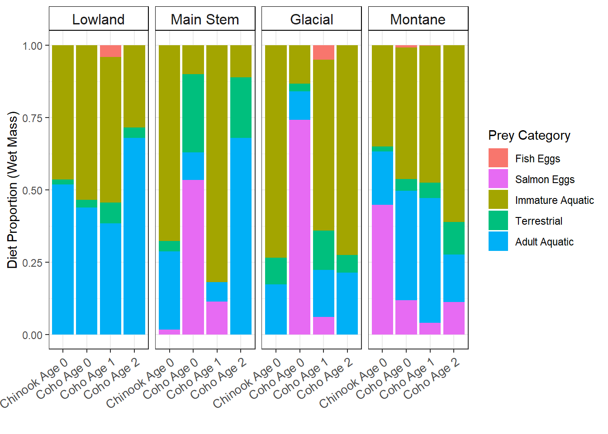
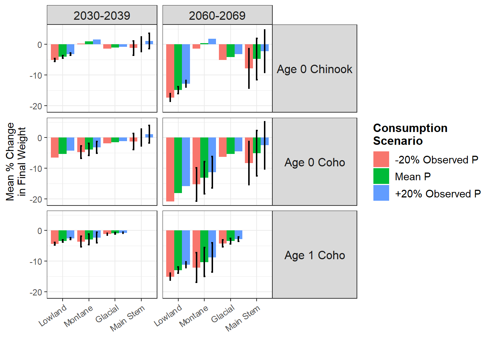

Code
library(tidyverse)
library(janitor)
library(lubridate)
library(plotrix)
library(kableExtra)library(tidyverse)
library(janitor)
library(lubridate)
library(plotrix)
library(kableExtra)This chapter imports committed Fish Bioenergetics 4.0 output files and reproduces the key tables and figures from Meyer et al. 2023. Results from simulations using two parameter sets are compared:
Downstream tables and figures read from committed CSV files. No bioenergetics model re-execution is required.
cols_retain <- c("run_name", "first_day", "last_day", "species_txt",
"year", "season", "site", "spp", "age",
"initial_w", "final_weight_g", "fit.to", "fit.to.value",
"p_value", "total_consumption_g", "cum_cons_pop_g")
old_param_results <- read.csv(
"other/FB4_1.1.3_2015_2016.1/FB4_2015_2016_models_old_parameters.csv"
) |>
clean_names() |>
separate(col = run_name,
into = c("year", "season", "site", "spp", "agex", "age"),
sep = "_", remove = FALSE) |>
select(any_of(cols_retain)) |>
mutate(parameters = "stewart_ibarra")
new_param_results <- read.csv(
"other/FB4_1.1.3_2015_2016.1/FB4_2015_2016_models_new_parameters.csv"
) |>
clean_names() |>
separate(col = run_name,
into = c("year", "season", "site", "spp", "agex", "age"),
sep = "_", remove = FALSE) |>
select(any_of(cols_retain)) |>
mutate(parameters = "plumb_moffit")
# Combine and attach simulation julian-day extents
sim_julian_days <- read.csv("other/outputs/observed_diet_proportions.csv") |>
select(spp, age, site, year, season, sim.start, sim.end) |>
mutate(
sim.start = yday(as.Date(sim.start)),
sim.end = yday(as.Date(sim.end)),
run_name = paste0(year, "_", season, "_", site, "_", spp, "_Age_", age)
) |>
select(sim.start, sim.end, run_name)
results <- bind_rows(old_param_results, new_param_results) |>
left_join(sim_julian_days, by = "run_name") |>
mutate(
scenario = "observed",
consumption_scenario = "observed"
)
nrow(results)[1] 116cols_retain_proj <- c(
"run_name", "first_day", "last_day", "species_txt",
"year", "season", "site", "spp", "age",
"initial_w", "fit.to", "fit.to.value", "p_value",
"final_weight_g", "total_consumption_g", "cum_cons_pop_g",
"scenario", "consumption_scenario", "parameters"
)
old_proj <- read.csv(
"other/FB4_1.1.3_projected.1/FB4_projected_models_old_parameters.csv"
) |>
clean_names() |>
mutate(parameters = "stewart_ibarra")
new_proj <- read.csv(
"other/FB4_1.1.3_projected.1/FB4_projected_models_new_parameters.csv"
) |>
clean_names() |>
mutate(parameters = "plumb_moffit")
results_projected <- bind_rows(old_proj, new_proj) |>
separate(
col = run_name,
into = c("consumption_scenario", "foo", "scenario",
"year1", "year2", "site", "spp", "agex", "age"),
sep = "_", remove = FALSE
) |>
mutate(year = paste0(year1, "_", year2)) |>
select(any_of(cols_retain_proj))
# Attach mean simulation start day (averaged across 2015 and 2016)
sim_julian_days_proj <- read.csv("other/outputs/observed_diet_proportions.csv") |>
mutate(
sim.start = yday(as.Date(sim.start)),
sim.end = yday(as.Date(sim.end))
) |>
group_by(spp, age, site) |>
summarise(avg_start_day = as.integer(mean(sim.start)), .groups = "drop") |>
mutate(age = as.character(age))
results_projected <- results_projected |>
left_join(sim_julian_days_proj, by = c("spp", "age", "site")) |>
rename(sim.start = avg_start_day) |>
mutate(
sim.end = sim.start + last_day,
season = "all_seasons"
)
nrow(results_projected)[1] 792dat <- bind_rows(results, results_projected) |>
separate(site,
into = c("reach", "river1", "river2"),
sep = " ", remove = FALSE) |>
mutate(stream_name = paste(river1, river2)) |>
select(-river1, -river2)
glimpse(dat)Rows: 908
Columns: 21
$ run_name <chr> "2015_Early Summer_Lower Kenai River_Chinook_Age_…
$ first_day <int> 1, 1, 1, 1, 1, 1, 1, 1, 1, 1, 1, 1, 1, 1, 1, 1, 1…
$ last_day <int> 31, 24, 36, 26, 26, 35, 35, 37, 22, 48, 29, 28, 2…
$ species_txt <chr> "Chinook salmon (adult)", "Coho salmon (adult)", …
$ year <chr> "2015", "2015", "2015", "2015", "2015", "2015", "…
$ season <chr> "Early Summer", "Early Summer", "Early Summer", "…
$ site <chr> "Lower Kenai River", "Lower Beaver Creek", "Middl…
$ reach <chr> "Lower", "Lower", "Middle", "Middle", "Middle", "…
$ spp <chr> "Chinook", "Coho", "Coho", "Coho", "Coho", "Coho"…
$ age <chr> "0", "1", "1", "0", "1", "0", "1", "1", "1", "0",…
$ initial_w <dbl> 1.3709931, 3.8584886, 5.2129817, 1.1239285, 4.959…
$ final_weight_g <dbl> 1.661, 4.242, 5.673, 1.439, 8.456, 1.612, 7.429, …
$ p_value <dbl> 0.283203, 0.296127, 0.278519, 0.314270, 0.627510,…
$ total_consumption_g <dbl> 3.232, 5.348, 9.555, 2.884, 18.848, 4.283, 20.273…
$ cum_cons_pop_g <dbl> 3.232, 5.348, 9.555, 2.884, 18.848, 4.283, 20.273…
$ parameters <chr> "stewart_ibarra", "stewart_ibarra", "stewart_ibar…
$ sim.start <dbl> 173, 155, 158, 170, 170, 167, 167, 174, 175, 152,…
$ sim.end <dbl> 204, 180, 194, 196, 196, 202, 202, 211, 197, 200,…
$ scenario <chr> "observed", "observed", "observed", "observed", "…
$ consumption_scenario <chr> "observed", "observed", "observed", "observed", "…
$ stream_name <chr> "Kenai River", "Beaver Creek", "Beaver Creek", "R…Start/end days and weights, plus estimated p-value, for each 2015-2016 simulation (Stewart & Ibarra parameters).
obs_sim_results <- dat |>
filter(parameters == "stewart_ibarra", year %in% c("2015", "2016")) |>
select(stream_name, reach, age, spp, year, season,
sim.start, sim.end, initial_w, final_weight_g, p_value) |>
arrange(stream_name, reach, spp, age, sim.start) |>
rename(
Watershed = stream_name,
Reach = reach,
Age = age,
Species = spp,
Year = year,
Season = season,
`Start Day` = sim.start,
`End Day` = sim.end,
`Initial Weight (g)` = initial_w,
`End Weight (g)` = final_weight_g,
`P-value` = p_value
)
write.csv(obs_sim_results, "other/outputs/obs_sim_results.csv", row.names = FALSE)
obs_sim_results |>
kable(caption = "Table S3: Observed simulation summary (Stewart & Ibarra parameters)") |>
kable_styling(full_width = FALSE) |>
column_spec(9:11, width = "2.2cm")| Watershed | Reach | Age | Species | Year | Season | Start Day | End Day | Initial Weight (g) | End Weight (g) | P-value |
|---|---|---|---|---|---|---|---|---|---|---|
| Beaver Creek | Lower | 0 | Chinook | 2016 | Mid-Summer | 173 | 201 | 1.4516947 | 1.941 | 0.351685 |
| Beaver Creek | Lower | 0 | Chinook | 2016 | Late Summer | 201 | 228 | 1.9412411 | 1.893 | 0.224487 |
| Beaver Creek | Lower | 0 | Coho | 2016 | Mid-Summer | 173 | 201 | 1.8506460 | 1.682 | 0.220337 |
| Beaver Creek | Lower | 0 | Coho | 2015 | Mid-Summer | 180 | 218 | 0.8069425 | 1.140 | 0.330688 |
| Beaver Creek | Lower | 0 | Coho | 2016 | Late Summer | 201 | 228 | 1.6818867 | 2.109 | 0.365417 |
| Beaver Creek | Lower | 1 | Coho | 2016 | Early Summer | 145 | 173 | 4.0212603 | 5.797 | 0.428070 |
| Beaver Creek | Lower | 1 | Coho | 2015 | Early Summer | 155 | 180 | 3.8584886 | 4.242 | 0.296127 |
| Beaver Creek | Lower | 1 | Coho | 2016 | Mid-Summer | 173 | 201 | 5.7968356 | 8.420 | 0.490097 |
| Beaver Creek | Lower | 1 | Coho | 2015 | Mid-Summer | 180 | 218 | 4.2417509 | 6.321 | 0.408325 |
| Beaver Creek | Lower | 1 | Coho | 2016 | Late Summer | 201 | 228 | 8.4202421 | 9.036 | 0.319382 |
| Beaver Creek | Middle | 0 | Chinook | 2016 | Mid-Summer | 172 | 202 | 1.6496570 | 2.412 | 0.378326 |
| Beaver Creek | Middle | 0 | Chinook | 2016 | Late Summer | 202 | 229 | 2.4118221 | 2.684 | 0.281036 |
| Beaver Creek | Middle | 1 | Coho | 2016 | Early Summer | 146 | 172 | 4.9312492 | 5.964 | 0.343750 |
| Beaver Creek | Middle | 1 | Coho | 2015 | Early Summer | 158 | 194 | 5.2129817 | 5.673 | 0.278519 |
| Beaver Creek | Middle | 1 | Coho | 2016 | Mid-Summer | 172 | 202 | 5.9638912 | 7.107 | 0.349030 |
| Beaver Creek | Middle | 1 | Coho | 2015 | Mid-Summer | 194 | 222 | 5.6730644 | 6.145 | 0.299561 |
| Beaver Creek | Middle | 1 | Coho | 2016 | Late Summer | 202 | 229 | 7.1073291 | 9.465 | 0.441162 |
| Beaver Creek | Upper | 0 | Chinook | 2016 | Late Summer | 204 | 230 | 3.0134187 | 3.414 | 0.306641 |
| Beaver Creek | Upper | 1 | Coho | 2016 | Early Summer | 147 | 174 | 6.6310386 | 7.871 | 0.348572 |
| Beaver Creek | Upper | 1 | Coho | 2016 | Mid-Summer | 174 | 204 | 7.8706978 | 8.670 | 0.322144 |
| Beaver Creek | Upper | 1 | Coho | 2016 | Late Summer | 204 | 230 | 8.6698776 | 9.905 | 0.358490 |
| Kenai River | Lower | 0 | Chinook | 2016 | Early Summer | 151 | 180 | 1.1817263 | 2.152 | 0.480530 |
| Kenai River | Lower | 0 | Chinook | 2015 | Early Summer | 173 | 204 | 1.3709931 | 1.661 | 0.283203 |
| Kenai River | Lower | 0 | Chinook | 2016 | Mid-Summer | 180 | 214 | 2.1517724 | 2.181 | 0.253998 |
| Kenai River | Lower | 0 | Chinook | 2016 | Late Summer | 214 | 244 | 2.1813390 | 3.311 | 0.424072 |
| Kenai River | Lower | 0 | Coho | 2015 | Mid-Summer | 204 | 225 | 1.1686376 | 1.350 | 0.181244 |
| Kenai River | Lower | 0 | Coho | 2016 | Late Summer | 214 | 244 | 1.4599825 | 1.463 | 0.125244 |
| Kenai River | Middle | 0 | Chinook | 2015 | Mid-Summer | 205 | 229 | 2.0957217 | 2.733 | 0.380981 |
| Kenai River | Middle | 0 | Chinook | 2016 | Late Summer | 215 | 248 | 2.4218063 | 2.436 | 0.239410 |
| Kenai River | Middle | 0 | Coho | 2015 | Mid-Summer | 205 | 229 | 1.0364518 | 1.258 | 0.171875 |
| Kenai River | Middle | 0 | Coho | 2016 | Late Summer | 215 | 248 | 1.2035601 | 1.331 | 0.145294 |
| Ptarmigan Creek | Lower | 0 | Chinook | 2016 | Mid-Summer | 183 | 223 | 3.1991386 | 4.534 | 0.368164 |
| Ptarmigan Creek | Lower | 0 | Coho | 2016 | Late Summer | 223 | 261 | 3.0674263 | 3.124 | 0.129883 |
| Ptarmigan Creek | Lower | 1 | Coho | 2016 | Early Summer | 157 | 183 | 3.9226176 | 5.532 | 0.392670 |
| Ptarmigan Creek | Lower | 1 | Coho | 2015 | Early Summer | 174 | 211 | 4.2220785 | 5.042 | 0.278397 |
| Ptarmigan Creek | Lower | 1 | Coho | 2016 | Mid-Summer | 183 | 223 | 5.5323586 | 7.749 | 0.352226 |
| Ptarmigan Creek | Lower | 1 | Coho | 2015 | Mid-Summer | 211 | 237 | 5.0419971 | 6.193 | 0.349335 |
| Ptarmigan Creek | Middle | 1 | Coho | 2015 | Early Summer | 175 | 197 | 7.6373639 | 5.563 | 0.011749 |
| Ptarmigan Creek | Middle | 1 | Coho | 2016 | Mid-Summer | 184 | 224 | 8.0080209 | 9.355 | 0.296356 |
| Ptarmigan Creek | Middle | 1 | Coho | 2015 | Mid-Summer | 197 | 238 | 5.5635839 | 7.416 | 0.399918 |
| Russian River | Lower | 0 | Chinook | 2016 | Early Summer | 152 | 200 | 1.3307592 | 3.217 | 0.312546 |
| Russian River | Lower | 0 | Coho | 2016 | Mid-Summer | 200 | 222 | 1.7677993 | 2.072 | 0.267883 |
| Russian River | Lower | 0 | Coho | 2016 | Late Summer | 222 | 246 | 2.0717025 | 1.797 | 0.122620 |
| Russian River | Lower | 1 | Coho | 2016 | Early Summer | 152 | 200 | 3.6564489 | 5.803 | 0.370995 |
| Russian River | Middle | 0 | Coho | 2015 | Early Summer | 170 | 196 | 1.1239285 | 1.439 | 0.314270 |
| Russian River | Middle | 0 | Coho | 2016 | Mid-Summer | 182 | 219 | 1.3751969 | 2.855 | 0.460632 |
| Russian River | Middle | 0 | Coho | 2015 | Mid-Summer | 196 | 224 | 1.4390184 | 1.950 | 0.367188 |
| Russian River | Middle | 0 | Coho | 2016 | Late Summer | 219 | 247 | 2.8550191 | 2.628 | 0.201965 |
| Russian River | Middle | 1 | Coho | 2016 | Early Summer | 153 | 182 | 4.6537489 | 6.813 | 0.453751 |
| Russian River | Middle | 1 | Coho | 2015 | Early Summer | 170 | 196 | 4.9591211 | 8.456 | 0.627510 |
| Russian River | Middle | 1 | Coho | 2016 | Mid-Summer | 182 | 219 | 6.8129218 | 9.381 | 0.469536 |
| Russian River | Middle | 1 | Coho | 2015 | Mid-Summer | 196 | 224 | 8.4557980 | 10.460 | 0.481636 |
| Russian River | Upper | 0 | Coho | 2015 | Early Summer | 167 | 202 | 0.9862471 | 1.612 | 0.347412 |
| Russian River | Upper | 0 | Coho | 2016 | Mid-Summer | 190 | 217 | 1.5774301 | 2.153 | 0.353607 |
| Russian River | Upper | 0 | Coho | 2015 | Mid-Summer | 202 | 232 | 1.6117310 | 1.892 | 0.320221 |
| Russian River | Upper | 0 | Coho | 2016 | Late Summer | 217 | 255 | 2.1526960 | 2.531 | 0.252792 |
| Russian River | Upper | 1 | Coho | 2015 | Early Summer | 167 | 202 | 3.6828119 | 7.429 | 0.581573 |
| Russian River | Upper | 1 | Coho | 2016 | Mid-Summer | 190 | 217 | 9.7194748 | 8.288 | 0.211792 |
Change in simulated final mass relative to the 2010-2019 baseline, for each projected scenario (Stewart & Ibarra parameters).
pct_chg_tbl <- dat |>
filter(scenario != "observed", parameters == "stewart_ibarra") |>
mutate(population = paste("Age", age, spp)) |>
select(stream_name, reach, population, year, scenario,
consumption_scenario, final_weight_g) |>
pivot_wider(names_from = "year", values_from = "final_weight_g") |>
unchop(everything()) |>
pivot_longer(
cols = c("2030_2039", "2060_2069"),
names_to = "year",
values_to = "final_mass_g"
) |>
mutate(
pct_chg_mass = ((final_mass_g - `2010_2019`) / `2010_2019`),
year = case_when(
year == "2030_2039" ~ "2030-2039",
year == "2060_2069" ~ "2060-2069"
),
consumption_scenario = case_when(
consumption_scenario == "mean" ~ "Mean",
consumption_scenario == "20minus" ~ "-20%",
consumption_scenario == "20plus" ~ "+20%"
),
scenario = case_when(
scenario == "rcp60" ~ "RCP 6.0",
scenario == "rcp85" ~ "RCP 8.5"
)
) |>
rename(
Watershed = stream_name,
Reach = reach,
Population = population,
`Simulation Period` = year,
`Climate Scenario` = scenario,
`Food Consumption Scenario` = consumption_scenario,
`Percent Change in Mass` = pct_chg_mass
) |>
select(-`2010_2019`, -final_mass_g) |>
relocate(Watershed, Reach, Population,
`Simulation Period`, `Climate Scenario`,
`Food Consumption Scenario`, `Percent Change in Mass`) |>
arrange(Watershed, Reach, Population,
`Simulation Period`, `Climate Scenario`, `Food Consumption Scenario`)
pct_chg_tbl_adorn <- pct_chg_tbl |>
janitor::adorn_pct_formatting(cols = `Percent Change in Mass`, digits = 2)
write.csv(pct_chg_tbl_adorn, "other/outputs/pct_chg_tbl.csv", row.names = FALSE)
pct_chg_tbl_adorn |>
kable(caption = "Table S5: Percent change in final mass by scenario (Stewart & Ibarra parameters)") |>
kable_styling(full_width = FALSE) |>
column_spec(4:7, width = "2.5cm")| Watershed | Reach | Population | Simulation Period | Climate Scenario | Food Consumption Scenario | Percent Change in Mass |
|---|---|---|---|---|---|---|
| Beaver Creek | Lower | Age 0 Chinook | 2030-2039 | RCP 6.0 | +20% | -3.56% |
| Beaver Creek | Lower | Age 0 Chinook | 2030-2039 | RCP 6.0 | -20% | -5.15% |
| Beaver Creek | Lower | Age 0 Chinook | 2030-2039 | RCP 6.0 | Mean | -4.27% |
| Beaver Creek | Lower | Age 0 Chinook | 2030-2039 | RCP 8.5 | +20% | -3.80% |
| Beaver Creek | Lower | Age 0 Chinook | 2030-2039 | RCP 8.5 | -20% | -6.00% |
| Beaver Creek | Lower | Age 0 Chinook | 2030-2039 | RCP 8.5 | Mean | -4.79% |
| Beaver Creek | Lower | Age 0 Chinook | 2060-2069 | RCP 6.0 | +20% | -8.25% |
| Beaver Creek | Lower | Age 0 Chinook | 2060-2069 | RCP 6.0 | -20% | -11.49% |
| Beaver Creek | Lower | Age 0 Chinook | 2060-2069 | RCP 6.0 | Mean | -9.70% |
| Beaver Creek | Lower | Age 0 Chinook | 2060-2069 | RCP 8.5 | +20% | -14.65% |
| Beaver Creek | Lower | Age 0 Chinook | 2060-2069 | RCP 8.5 | -20% | -19.50% |
| Beaver Creek | Lower | Age 0 Chinook | 2060-2069 | RCP 8.5 | Mean | -16.85% |
| Beaver Creek | Lower | Age 0 Coho | 2030-2039 | RCP 6.0 | +20% | -3.96% |
| Beaver Creek | Lower | Age 0 Coho | 2030-2039 | RCP 6.0 | -20% | -5.58% |
| Beaver Creek | Lower | Age 0 Coho | 2030-2039 | RCP 6.0 | Mean | -4.65% |
| Beaver Creek | Lower | Age 0 Coho | 2030-2039 | RCP 8.5 | +20% | -4.34% |
| Beaver Creek | Lower | Age 0 Coho | 2030-2039 | RCP 8.5 | -20% | -6.64% |
| Beaver Creek | Lower | Age 0 Coho | 2030-2039 | RCP 8.5 | Mean | -5.34% |
| Beaver Creek | Lower | Age 0 Coho | 2060-2069 | RCP 6.0 | +20% | -9.08% |
| Beaver Creek | Lower | Age 0 Coho | 2060-2069 | RCP 6.0 | -20% | -12.39% |
| Beaver Creek | Lower | Age 0 Coho | 2060-2069 | RCP 6.0 | Mean | -10.54% |
| Beaver Creek | Lower | Age 0 Coho | 2060-2069 | RCP 8.5 | +20% | -15.93% |
| Beaver Creek | Lower | Age 0 Coho | 2060-2069 | RCP 8.5 | -20% | -20.87% |
| Beaver Creek | Lower | Age 0 Coho | 2060-2069 | RCP 8.5 | Mean | -18.14% |
| Beaver Creek | Lower | Age 1 Coho | 2030-2039 | RCP 6.0 | +20% | -3.03% |
| Beaver Creek | Lower | Age 1 Coho | 2030-2039 | RCP 6.0 | -20% | -4.40% |
| Beaver Creek | Lower | Age 1 Coho | 2030-2039 | RCP 6.0 | Mean | -3.66% |
| Beaver Creek | Lower | Age 1 Coho | 2030-2039 | RCP 8.5 | +20% | -3.18% |
| Beaver Creek | Lower | Age 1 Coho | 2030-2039 | RCP 8.5 | -20% | -5.10% |
| Beaver Creek | Lower | Age 1 Coho | 2030-2039 | RCP 8.5 | Mean | -4.05% |
| Beaver Creek | Lower | Age 1 Coho | 2060-2069 | RCP 6.0 | +20% | -7.10% |
| Beaver Creek | Lower | Age 1 Coho | 2060-2069 | RCP 6.0 | -20% | -9.91% |
| Beaver Creek | Lower | Age 1 Coho | 2060-2069 | RCP 6.0 | Mean | -8.39% |
| Beaver Creek | Lower | Age 1 Coho | 2060-2069 | RCP 8.5 | +20% | -12.75% |
| Beaver Creek | Lower | Age 1 Coho | 2060-2069 | RCP 8.5 | -20% | -16.97% |
| Beaver Creek | Lower | Age 1 Coho | 2060-2069 | RCP 8.5 | Mean | -14.67% |
| Beaver Creek | Middle | Age 0 Chinook | 2030-2039 | RCP 6.0 | +20% | -2.76% |
| Beaver Creek | Middle | Age 0 Chinook | 2030-2039 | RCP 6.0 | -20% | -4.15% |
| Beaver Creek | Middle | Age 0 Chinook | 2030-2039 | RCP 6.0 | Mean | -3.39% |
| Beaver Creek | Middle | Age 0 Chinook | 2030-2039 | RCP 8.5 | +20% | -2.59% |
| Beaver Creek | Middle | Age 0 Chinook | 2030-2039 | RCP 8.5 | -20% | -4.41% |
| Beaver Creek | Middle | Age 0 Chinook | 2030-2039 | RCP 8.5 | Mean | -3.41% |
| Beaver Creek | Middle | Age 0 Chinook | 2060-2069 | RCP 6.0 | +20% | -6.17% |
| Beaver Creek | Middle | Age 0 Chinook | 2060-2069 | RCP 6.0 | -20% | -9.03% |
| Beaver Creek | Middle | Age 0 Chinook | 2060-2069 | RCP 6.0 | Mean | -7.48% |
| Beaver Creek | Middle | Age 0 Chinook | 2060-2069 | RCP 8.5 | +20% | -10.94% |
| Beaver Creek | Middle | Age 0 Chinook | 2060-2069 | RCP 8.5 | -20% | -15.22% |
| Beaver Creek | Middle | Age 0 Chinook | 2060-2069 | RCP 8.5 | Mean | -12.89% |
| Beaver Creek | Middle | Age 1 Coho | 2030-2039 | RCP 6.0 | +20% | -2.35% |
| Beaver Creek | Middle | Age 1 Coho | 2030-2039 | RCP 6.0 | -20% | -3.55% |
| Beaver Creek | Middle | Age 1 Coho | 2030-2039 | RCP 6.0 | Mean | -2.89% |
| Beaver Creek | Middle | Age 1 Coho | 2030-2039 | RCP 8.5 | +20% | -2.17% |
| Beaver Creek | Middle | Age 1 Coho | 2030-2039 | RCP 8.5 | -20% | -3.75% |
| Beaver Creek | Middle | Age 1 Coho | 2030-2039 | RCP 8.5 | Mean | -2.89% |
| Beaver Creek | Middle | Age 1 Coho | 2060-2069 | RCP 6.0 | +20% | -5.30% |
| Beaver Creek | Middle | Age 1 Coho | 2060-2069 | RCP 6.0 | -20% | -7.75% |
| Beaver Creek | Middle | Age 1 Coho | 2060-2069 | RCP 6.0 | Mean | -6.42% |
| Beaver Creek | Middle | Age 1 Coho | 2060-2069 | RCP 8.5 | +20% | -9.48% |
| Beaver Creek | Middle | Age 1 Coho | 2060-2069 | RCP 8.5 | -20% | -13.14% |
| Beaver Creek | Middle | Age 1 Coho | 2060-2069 | RCP 8.5 | Mean | -11.16% |
| Beaver Creek | Upper | Age 0 Chinook | 2030-2039 | RCP 6.0 | +20% | -3.08% |
| Beaver Creek | Upper | Age 0 Chinook | 2030-2039 | RCP 6.0 | -20% | -4.45% |
| Beaver Creek | Upper | Age 0 Chinook | 2030-2039 | RCP 6.0 | Mean | -3.69% |
| Beaver Creek | Upper | Age 0 Chinook | 2030-2039 | RCP 8.5 | +20% | -3.18% |
| Beaver Creek | Upper | Age 0 Chinook | 2030-2039 | RCP 8.5 | -20% | -5.00% |
| Beaver Creek | Upper | Age 0 Chinook | 2030-2039 | RCP 8.5 | Mean | -4.00% |
| Beaver Creek | Upper | Age 0 Chinook | 2060-2069 | RCP 6.0 | +20% | -7.09% |
| Beaver Creek | Upper | Age 0 Chinook | 2060-2069 | RCP 6.0 | -20% | -9.88% |
| Beaver Creek | Upper | Age 0 Chinook | 2060-2069 | RCP 6.0 | Mean | -8.36% |
| Beaver Creek | Upper | Age 0 Chinook | 2060-2069 | RCP 8.5 | +20% | -12.97% |
| Beaver Creek | Upper | Age 0 Chinook | 2060-2069 | RCP 8.5 | -20% | -17.20% |
| Beaver Creek | Upper | Age 0 Chinook | 2060-2069 | RCP 8.5 | Mean | -14.90% |
| Beaver Creek | Upper | Age 1 Coho | 2030-2039 | RCP 6.0 | +20% | -2.60% |
| Beaver Creek | Upper | Age 1 Coho | 2030-2039 | RCP 6.0 | -20% | -3.82% |
| Beaver Creek | Upper | Age 1 Coho | 2030-2039 | RCP 6.0 | Mean | -3.16% |
| Beaver Creek | Upper | Age 1 Coho | 2030-2039 | RCP 8.5 | +20% | -2.62% |
| Beaver Creek | Upper | Age 1 Coho | 2030-2039 | RCP 8.5 | -20% | -4.24% |
| Beaver Creek | Upper | Age 1 Coho | 2030-2039 | RCP 8.5 | Mean | -3.37% |
| Beaver Creek | Upper | Age 1 Coho | 2060-2069 | RCP 6.0 | +20% | -6.08% |
| Beaver Creek | Upper | Age 1 Coho | 2060-2069 | RCP 6.0 | -20% | -8.59% |
| Beaver Creek | Upper | Age 1 Coho | 2060-2069 | RCP 6.0 | Mean | -7.23% |
| Beaver Creek | Upper | Age 1 Coho | 2060-2069 | RCP 8.5 | +20% | -11.29% |
| Beaver Creek | Upper | Age 1 Coho | 2060-2069 | RCP 8.5 | -20% | -15.08% |
| Beaver Creek | Upper | Age 1 Coho | 2060-2069 | RCP 8.5 | Mean | -13.04% |
| Kenai River | Lower | Age 0 Chinook | 2030-2039 | RCP 6.0 | +20% | -1.63% |
| Kenai River | Lower | Age 0 Chinook | 2030-2039 | RCP 6.0 | -20% | -3.34% |
| Kenai River | Lower | Age 0 Chinook | 2030-2039 | RCP 6.0 | Mean | -2.40% |
| Kenai River | Lower | Age 0 Chinook | 2030-2039 | RCP 8.5 | +20% | -1.36% |
| Kenai River | Lower | Age 0 Chinook | 2030-2039 | RCP 8.5 | -20% | -3.52% |
| Kenai River | Lower | Age 0 Chinook | 2030-2039 | RCP 8.5 | Mean | -2.33% |
| Kenai River | Lower | Age 0 Chinook | 2060-2069 | RCP 6.0 | +20% | -4.21% |
| Kenai River | Lower | Age 0 Chinook | 2060-2069 | RCP 6.0 | -20% | -7.59% |
| Kenai River | Lower | Age 0 Chinook | 2060-2069 | RCP 6.0 | Mean | -5.71% |
| Kenai River | Lower | Age 0 Chinook | 2060-2069 | RCP 8.5 | +20% | -9.10% |
| Kenai River | Lower | Age 0 Chinook | 2060-2069 | RCP 8.5 | -20% | -14.30% |
| Kenai River | Lower | Age 0 Chinook | 2060-2069 | RCP 8.5 | Mean | -11.47% |
| Kenai River | Lower | Age 0 Coho | 2030-2039 | RCP 6.0 | +20% | -1.98% |
| Kenai River | Lower | Age 0 Coho | 2030-2039 | RCP 6.0 | -20% | -3.66% |
| Kenai River | Lower | Age 0 Coho | 2030-2039 | RCP 6.0 | Mean | -2.73% |
| Kenai River | Lower | Age 0 Coho | 2030-2039 | RCP 8.5 | +20% | -1.80% |
| Kenai River | Lower | Age 0 Coho | 2030-2039 | RCP 8.5 | -20% | -3.98% |
| Kenai River | Lower | Age 0 Coho | 2030-2039 | RCP 8.5 | Mean | -2.76% |
| Kenai River | Lower | Age 0 Coho | 2060-2069 | RCP 6.0 | +20% | -4.92% |
| Kenai River | Lower | Age 0 Coho | 2060-2069 | RCP 6.0 | -20% | -8.30% |
| Kenai River | Lower | Age 0 Coho | 2060-2069 | RCP 6.0 | Mean | -6.43% |
| Kenai River | Lower | Age 0 Coho | 2060-2069 | RCP 8.5 | +20% | -10.26% |
| Kenai River | Lower | Age 0 Coho | 2060-2069 | RCP 8.5 | -20% | -15.46% |
| Kenai River | Lower | Age 0 Coho | 2060-2069 | RCP 8.5 | Mean | -12.58% |
| Kenai River | Middle | Age 0 Chinook | 2030-2039 | RCP 6.0 | +20% | 2.39% |
| Kenai River | Middle | Age 0 Chinook | 2030-2039 | RCP 6.0 | -20% | 0.45% |
| Kenai River | Middle | Age 0 Chinook | 2030-2039 | RCP 6.0 | Mean | 1.51% |
| Kenai River | Middle | Age 0 Chinook | 2030-2039 | RCP 8.5 | +20% | 3.56% |
| Kenai River | Middle | Age 0 Chinook | 2030-2039 | RCP 8.5 | -20% | 1.13% |
| Kenai River | Middle | Age 0 Chinook | 2030-2039 | RCP 8.5 | Mean | 2.45% |
| Kenai River | Middle | Age 0 Chinook | 2060-2069 | RCP 6.0 | +20% | 4.41% |
| Kenai River | Middle | Age 0 Chinook | 2060-2069 | RCP 6.0 | -20% | 0.48% |
| Kenai River | Middle | Age 0 Chinook | 2060-2069 | RCP 6.0 | Mean | 2.60% |
| Kenai River | Middle | Age 0 Chinook | 2060-2069 | RCP 8.5 | +20% | 4.72% |
| Kenai River | Middle | Age 0 Chinook | 2060-2069 | RCP 8.5 | -20% | -1.36% |
| Kenai River | Middle | Age 0 Chinook | 2060-2069 | RCP 8.5 | Mean | 1.94% |
| Kenai River | Middle | Age 0 Coho | 2030-2039 | RCP 6.0 | +20% | 2.59% |
| Kenai River | Middle | Age 0 Coho | 2030-2039 | RCP 6.0 | -20% | 0.55% |
| Kenai River | Middle | Age 0 Coho | 2030-2039 | RCP 6.0 | Mean | 1.70% |
| Kenai River | Middle | Age 0 Coho | 2030-2039 | RCP 8.5 | +20% | 3.85% |
| Kenai River | Middle | Age 0 Coho | 2030-2039 | RCP 8.5 | -20% | 1.29% |
| Kenai River | Middle | Age 0 Coho | 2030-2039 | RCP 8.5 | Mean | 2.72% |
| Kenai River | Middle | Age 0 Coho | 2060-2069 | RCP 6.0 | +20% | 4.79% |
| Kenai River | Middle | Age 0 Coho | 2060-2069 | RCP 6.0 | -20% | 0.62% |
| Kenai River | Middle | Age 0 Coho | 2060-2069 | RCP 6.0 | Mean | 2.92% |
| Kenai River | Middle | Age 0 Coho | 2060-2069 | RCP 8.5 | +20% | 5.11% |
| Kenai River | Middle | Age 0 Coho | 2060-2069 | RCP 8.5 | -20% | -1.36% |
| Kenai River | Middle | Age 0 Coho | 2060-2069 | RCP 8.5 | Mean | 2.19% |
| Ptarmigan Creek | Lower | Age 0 Chinook | 2030-2039 | RCP 6.0 | +20% | -0.78% |
| Ptarmigan Creek | Lower | Age 0 Chinook | 2030-2039 | RCP 6.0 | -20% | -1.35% |
| Ptarmigan Creek | Lower | Age 0 Chinook | 2030-2039 | RCP 6.0 | Mean | -1.04% |
| Ptarmigan Creek | Lower | Age 0 Chinook | 2030-2039 | RCP 8.5 | +20% | -0.79% |
| Ptarmigan Creek | Lower | Age 0 Chinook | 2030-2039 | RCP 8.5 | -20% | -1.45% |
| Ptarmigan Creek | Lower | Age 0 Chinook | 2030-2039 | RCP 8.5 | Mean | -1.09% |
| Ptarmigan Creek | Lower | Age 0 Chinook | 2060-2069 | RCP 6.0 | +20% | -1.80% |
| Ptarmigan Creek | Lower | Age 0 Chinook | 2060-2069 | RCP 6.0 | -20% | -2.99% |
| Ptarmigan Creek | Lower | Age 0 Chinook | 2060-2069 | RCP 6.0 | Mean | -2.33% |
| Ptarmigan Creek | Lower | Age 0 Chinook | 2060-2069 | RCP 8.5 | +20% | -3.24% |
| Ptarmigan Creek | Lower | Age 0 Chinook | 2060-2069 | RCP 8.5 | -20% | -5.11% |
| Ptarmigan Creek | Lower | Age 0 Chinook | 2060-2069 | RCP 8.5 | Mean | -4.08% |
| Ptarmigan Creek | Lower | Age 0 Coho | 2030-2039 | RCP 6.0 | +20% | -1.19% |
| Ptarmigan Creek | Lower | Age 0 Coho | 2030-2039 | RCP 6.0 | -20% | -1.73% |
| Ptarmigan Creek | Lower | Age 0 Coho | 2030-2039 | RCP 6.0 | Mean | -1.45% |
| Ptarmigan Creek | Lower | Age 0 Coho | 2030-2039 | RCP 8.5 | +20% | -1.26% |
| Ptarmigan Creek | Lower | Age 0 Coho | 2030-2039 | RCP 8.5 | -20% | -1.89% |
| Ptarmigan Creek | Lower | Age 0 Coho | 2030-2039 | RCP 8.5 | Mean | -1.54% |
| Ptarmigan Creek | Lower | Age 0 Coho | 2060-2069 | RCP 6.0 | +20% | -2.65% |
| Ptarmigan Creek | Lower | Age 0 Coho | 2060-2069 | RCP 6.0 | -20% | -3.79% |
| Ptarmigan Creek | Lower | Age 0 Coho | 2060-2069 | RCP 6.0 | Mean | -3.18% |
| Ptarmigan Creek | Lower | Age 0 Coho | 2060-2069 | RCP 8.5 | +20% | -4.57% |
| Ptarmigan Creek | Lower | Age 0 Coho | 2060-2069 | RCP 8.5 | -20% | -6.35% |
| Ptarmigan Creek | Lower | Age 0 Coho | 2060-2069 | RCP 8.5 | Mean | -5.38% |
| Ptarmigan Creek | Lower | Age 1 Coho | 2030-2039 | RCP 6.0 | +20% | -0.89% |
| Ptarmigan Creek | Lower | Age 1 Coho | 2030-2039 | RCP 6.0 | -20% | -1.44% |
| Ptarmigan Creek | Lower | Age 1 Coho | 2030-2039 | RCP 6.0 | Mean | -1.15% |
| Ptarmigan Creek | Lower | Age 1 Coho | 2030-2039 | RCP 8.5 | +20% | -0.92% |
| Ptarmigan Creek | Lower | Age 1 Coho | 2030-2039 | RCP 8.5 | -20% | -1.55% |
| Ptarmigan Creek | Lower | Age 1 Coho | 2030-2039 | RCP 8.5 | Mean | -1.21% |
| Ptarmigan Creek | Lower | Age 1 Coho | 2060-2069 | RCP 6.0 | +20% | -2.03% |
| Ptarmigan Creek | Lower | Age 1 Coho | 2060-2069 | RCP 6.0 | -20% | -3.15% |
| Ptarmigan Creek | Lower | Age 1 Coho | 2060-2069 | RCP 6.0 | Mean | -2.54% |
| Ptarmigan Creek | Lower | Age 1 Coho | 2060-2069 | RCP 8.5 | +20% | -3.58% |
| Ptarmigan Creek | Lower | Age 1 Coho | 2060-2069 | RCP 8.5 | -20% | -5.37% |
| Ptarmigan Creek | Lower | Age 1 Coho | 2060-2069 | RCP 8.5 | Mean | -4.40% |
| Ptarmigan Creek | Middle | Age 1 Coho | 2030-2039 | RCP 6.0 | +20% | -0.56% |
| Ptarmigan Creek | Middle | Age 1 Coho | 2030-2039 | RCP 6.0 | -20% | -0.85% |
| Ptarmigan Creek | Middle | Age 1 Coho | 2030-2039 | RCP 6.0 | Mean | -0.70% |
| Ptarmigan Creek | Middle | Age 1 Coho | 2030-2039 | RCP 8.5 | +20% | -0.59% |
| Ptarmigan Creek | Middle | Age 1 Coho | 2030-2039 | RCP 8.5 | -20% | -0.91% |
| Ptarmigan Creek | Middle | Age 1 Coho | 2030-2039 | RCP 8.5 | Mean | -0.74% |
| Ptarmigan Creek | Middle | Age 1 Coho | 2060-2069 | RCP 6.0 | +20% | -1.27% |
| Ptarmigan Creek | Middle | Age 1 Coho | 2060-2069 | RCP 6.0 | -20% | -1.91% |
| Ptarmigan Creek | Middle | Age 1 Coho | 2060-2069 | RCP 6.0 | Mean | -1.56% |
| Ptarmigan Creek | Middle | Age 1 Coho | 2060-2069 | RCP 8.5 | +20% | -2.11% |
| Ptarmigan Creek | Middle | Age 1 Coho | 2060-2069 | RCP 8.5 | -20% | -3.11% |
| Ptarmigan Creek | Middle | Age 1 Coho | 2060-2069 | RCP 8.5 | Mean | -2.57% |
| Russian River | Lower | Age 0 Chinook | 2030-2039 | RCP 6.0 | +20% | 1.07% |
| Russian River | Lower | Age 0 Chinook | 2030-2039 | RCP 6.0 | -20% | 0.04% |
| Russian River | Lower | Age 0 Chinook | 2030-2039 | RCP 6.0 | Mean | 0.63% |
| Russian River | Lower | Age 0 Chinook | 2030-2039 | RCP 8.5 | +20% | 1.58% |
| Russian River | Lower | Age 0 Chinook | 2030-2039 | RCP 8.5 | -20% | 0.32% |
| Russian River | Lower | Age 0 Chinook | 2030-2039 | RCP 8.5 | Mean | 1.03% |
| Russian River | Lower | Age 0 Chinook | 2060-2069 | RCP 6.0 | +20% | 1.84% |
| Russian River | Lower | Age 0 Chinook | 2060-2069 | RCP 6.0 | -20% | -0.23% |
| Russian River | Lower | Age 0 Chinook | 2060-2069 | RCP 6.0 | Mean | 0.94% |
| Russian River | Lower | Age 0 Chinook | 2060-2069 | RCP 8.5 | +20% | 1.86% |
| Russian River | Lower | Age 0 Chinook | 2060-2069 | RCP 8.5 | -20% | -1.41% |
| Russian River | Lower | Age 0 Chinook | 2060-2069 | RCP 8.5 | Mean | 0.42% |
| Russian River | Lower | Age 0 Coho | 2030-2039 | RCP 6.0 | +20% | 0.01% |
| Russian River | Lower | Age 0 Coho | 2030-2039 | RCP 6.0 | -20% | -1.05% |
| Russian River | Lower | Age 0 Coho | 2030-2039 | RCP 6.0 | Mean | -0.47% |
| Russian River | Lower | Age 0 Coho | 2030-2039 | RCP 8.5 | +20% | 0.28% |
| Russian River | Lower | Age 0 Coho | 2030-2039 | RCP 8.5 | -20% | -1.02% |
| Russian River | Lower | Age 0 Coho | 2030-2039 | RCP 8.5 | Mean | -0.30% |
| Russian River | Lower | Age 0 Coho | 2060-2069 | RCP 6.0 | +20% | -0.27% |
| Russian River | Lower | Age 0 Coho | 2060-2069 | RCP 6.0 | -20% | -2.41% |
| Russian River | Lower | Age 0 Coho | 2060-2069 | RCP 6.0 | Mean | -1.23% |
| Russian River | Lower | Age 0 Coho | 2060-2069 | RCP 8.5 | +20% | -1.44% |
| Russian River | Lower | Age 0 Coho | 2060-2069 | RCP 8.5 | -20% | -4.77% |
| Russian River | Lower | Age 0 Coho | 2060-2069 | RCP 8.5 | Mean | -2.94% |
| Russian River | Lower | Age 1 Coho | 2030-2039 | RCP 6.0 | +20% | 0.55% |
| Russian River | Lower | Age 1 Coho | 2030-2039 | RCP 6.0 | -20% | -0.44% |
| Russian River | Lower | Age 1 Coho | 2030-2039 | RCP 6.0 | Mean | 0.10% |
| Russian River | Lower | Age 1 Coho | 2030-2039 | RCP 8.5 | +20% | 0.91% |
| Russian River | Lower | Age 1 Coho | 2030-2039 | RCP 8.5 | -20% | -0.31% |
| Russian River | Lower | Age 1 Coho | 2030-2039 | RCP 8.5 | Mean | 0.36% |
| Russian River | Lower | Age 1 Coho | 2060-2069 | RCP 6.0 | +20% | 0.83% |
| Russian River | Lower | Age 1 Coho | 2060-2069 | RCP 6.0 | -20% | -1.16% |
| Russian River | Lower | Age 1 Coho | 2060-2069 | RCP 6.0 | Mean | -0.07% |
| Russian River | Lower | Age 1 Coho | 2060-2069 | RCP 8.5 | +20% | 0.34% |
| Russian River | Lower | Age 1 Coho | 2060-2069 | RCP 8.5 | -20% | -2.78% |
| Russian River | Lower | Age 1 Coho | 2060-2069 | RCP 8.5 | Mean | -1.06% |
| Russian River | Middle | Age 0 Coho | 2030-2039 | RCP 6.0 | +20% | -5.76% |
| Russian River | Middle | Age 0 Coho | 2030-2039 | RCP 6.0 | -20% | -7.32% |
| Russian River | Middle | Age 0 Coho | 2030-2039 | RCP 6.0 | Mean | -6.45% |
| Russian River | Middle | Age 0 Coho | 2030-2039 | RCP 8.5 | +20% | -6.14% |
| Russian River | Middle | Age 0 Coho | 2030-2039 | RCP 8.5 | -20% | -7.90% |
| Russian River | Middle | Age 0 Coho | 2030-2039 | RCP 8.5 | Mean | -6.90% |
| Russian River | Middle | Age 0 Coho | 2060-2069 | RCP 6.0 | +20% | -11.69% |
| Russian River | Middle | Age 0 Coho | 2060-2069 | RCP 6.0 | -20% | -14.57% |
| Russian River | Middle | Age 0 Coho | 2060-2069 | RCP 6.0 | Mean | -12.97% |
| Russian River | Middle | Age 0 Coho | 2060-2069 | RCP 8.5 | +20% | -18.64% |
| Russian River | Middle | Age 0 Coho | 2060-2069 | RCP 8.5 | -20% | -22.82% |
| Russian River | Middle | Age 0 Coho | 2060-2069 | RCP 8.5 | Mean | -20.50% |
| Russian River | Middle | Age 1 Coho | 2030-2039 | RCP 6.0 | +20% | -4.70% |
| Russian River | Middle | Age 1 Coho | 2030-2039 | RCP 6.0 | -20% | -5.87% |
| Russian River | Middle | Age 1 Coho | 2030-2039 | RCP 6.0 | Mean | -5.23% |
| Russian River | Middle | Age 1 Coho | 2030-2039 | RCP 8.5 | +20% | -4.96% |
| Russian River | Middle | Age 1 Coho | 2030-2039 | RCP 8.5 | -20% | -6.29% |
| Russian River | Middle | Age 1 Coho | 2030-2039 | RCP 8.5 | Mean | -5.56% |
| Russian River | Middle | Age 1 Coho | 2060-2069 | RCP 6.0 | +20% | -9.59% |
| Russian River | Middle | Age 1 Coho | 2060-2069 | RCP 6.0 | -20% | -11.82% |
| Russian River | Middle | Age 1 Coho | 2060-2069 | RCP 6.0 | Mean | -10.60% |
| Russian River | Middle | Age 1 Coho | 2060-2069 | RCP 8.5 | +20% | -15.48% |
| Russian River | Middle | Age 1 Coho | 2060-2069 | RCP 8.5 | -20% | -18.72% |
| Russian River | Middle | Age 1 Coho | 2060-2069 | RCP 8.5 | Mean | -16.94% |
| Russian River | Upper | Age 0 Coho | 2030-2039 | RCP 6.0 | +20% | -3.61% |
| Russian River | Upper | Age 0 Coho | 2030-2039 | RCP 6.0 | -20% | -4.95% |
| Russian River | Upper | Age 0 Coho | 2030-2039 | RCP 6.0 | Mean | -4.18% |
| Russian River | Upper | Age 0 Coho | 2030-2039 | RCP 8.5 | +20% | -3.86% |
| Russian River | Upper | Age 0 Coho | 2030-2039 | RCP 8.5 | -20% | -5.45% |
| Russian River | Upper | Age 0 Coho | 2030-2039 | RCP 8.5 | Mean | -4.58% |
| Russian River | Upper | Age 0 Coho | 2060-2069 | RCP 6.0 | +20% | -8.06% |
| Russian River | Upper | Age 0 Coho | 2060-2069 | RCP 6.0 | -20% | -10.81% |
| Russian River | Upper | Age 0 Coho | 2060-2069 | RCP 6.0 | Mean | -9.25% |
| Russian River | Upper | Age 0 Coho | 2060-2069 | RCP 8.5 | +20% | -14.09% |
| Russian River | Upper | Age 0 Coho | 2060-2069 | RCP 8.5 | -20% | -18.32% |
| Russian River | Upper | Age 0 Coho | 2060-2069 | RCP 8.5 | Mean | -15.95% |
| Russian River | Upper | Age 1 Coho | 2030-2039 | RCP 6.0 | +20% | -2.83% |
| Russian River | Upper | Age 1 Coho | 2030-2039 | RCP 6.0 | -20% | -3.89% |
| Russian River | Upper | Age 1 Coho | 2030-2039 | RCP 6.0 | Mean | -3.30% |
| Russian River | Upper | Age 1 Coho | 2030-2039 | RCP 8.5 | +20% | -2.95% |
| Russian River | Upper | Age 1 Coho | 2030-2039 | RCP 8.5 | -20% | -4.26% |
| Russian River | Upper | Age 1 Coho | 2030-2039 | RCP 8.5 | Mean | -3.54% |
| Russian River | Upper | Age 1 Coho | 2060-2069 | RCP 6.0 | +20% | -6.37% |
| Russian River | Upper | Age 1 Coho | 2060-2069 | RCP 6.0 | -20% | -8.59% |
| Russian River | Upper | Age 1 Coho | 2060-2069 | RCP 6.0 | Mean | -7.37% |
| Russian River | Upper | Age 1 Coho | 2060-2069 | RCP 8.5 | +20% | -11.32% |
| Russian River | Upper | Age 1 Coho | 2060-2069 | RCP 8.5 | -20% | -14.77% |
| Russian River | Upper | Age 1 Coho | 2060-2069 | RCP 8.5 | Mean | -12.87% |
pct_chg_summ_tbl <- pct_chg_tbl |>
group_by(Watershed, `Simulation Period`) |>
summarise(
n = n(),
mean = round(mean(`Percent Change in Mass` * 100), digits = 2),
stdev = sd(`Percent Change in Mass`),
Max = max(`Percent Change in Mass`),
Min = min(`Percent Change in Mass`),
.groups = "drop"
) |>
janitor::adorn_pct_formatting(cols = c("stdev", "Min", "Max"), digits = 2) |>
mutate(`Mean ± SD` = paste(mean, "±", stdev)) |>
select(-mean, -stdev) |>
select(Watershed, `Simulation Period`, n, `Mean ± SD`, Max, Min)
write.csv(pct_chg_summ_tbl, "other/outputs/pct_chg_summ_tbl.csv",
row.names = FALSE)
pct_chg_summ_tbl |>
kable(caption = "Table 4: Mean percent change in mass by watershed and period") |>
kable_styling(full_width = FALSE) |>
column_spec(c(2, 4), width = "2.5cm")| Watershed | Simulation Period | n | Mean ± SD | Max | Min |
|---|---|---|---|---|---|
| Beaver Creek | 2030-2039 | 42 | -3.88 ± 1.01% | -2.17% | -6.64% |
| Beaver Creek | 2060-2069 | 42 | -11.52 ± 3.98% | -5.30% | -20.87% |
| Kenai River | 2030-2039 | 24 | -0.3 ± 2.56% | 3.85% | -3.98% |
| Kenai River | 2060-2069 | 24 | -3.47 ± 6.57% | 5.11% | -15.46% |
| Ptarmigan Creek | 2030-2039 | 24 | -1.13 ± 0.37% | -0.56% | -1.89% |
| Ptarmigan Creek | 2060-2069 | 24 | -3.29 ± 1.35% | -1.27% | -6.35% |
| Russian River | 2030-2039 | 42 | -2.79 ± 2.84% | 1.58% | -7.90% |
| Russian River | 2060-2069 | 42 | -7.99 ± 7.23% | 1.86% | -22.82% |
# River labels used in Meyer et al. 2023
stream_facets <- c(
"Beaver Creek" = "Lowland",
"Russian River" = "Montane",
"Ptarmigan Creek" = "Glacial",
"Kenai River" = "Main Stem"
)
# Diet proportions table (stream × species × age, pooled across years)
# Source: wet_mass_diet_proportions.csv (committed output from Chapter 4)
diet_prop <- read.csv("other/outputs/diet/wet_mass_diet_proportions.csv") |>
rename(Stream_Name = Stream_Name) |>
pivot_longer(
cols = c("FishEggs", "InvertAquatic_AqOrigin",
"InvertTerrestrial", "InvertTerrestrial_AqOrigin",
"SalmonEggs"),
names_to = "preycat",
values_to = "dietprop"
) |>
filter(!(spp == "Chinook" & age == 1)) # exclude age-1 Chinook
diet_prop |>
mutate(spp_age = paste(spp, "Age", age)) |>
ggplot(aes(spp_age, dietprop, fill = preycat)) +
geom_bar(position = "fill", stat = "identity") +
facet_grid(. ~ Stream_Name,
labeller = labeller(Stream_Name = stream_facets)) +
scale_fill_discrete(
breaks = c("FishEggs", "SalmonEggs",
"InvertAquatic_AqOrigin",
"InvertTerrestrial",
"InvertTerrestrial_AqOrigin"),
labels = c("Fish Eggs", "Salmon Eggs",
"Immature Aquatic", "Terrestrial", "Adult Aquatic")
) +
theme_bw() +
xlab("") +
ylab("Diet Proportion (Wet Mass)") +
labs(fill = "Prey Category") +
theme(
strip.background = element_rect(fill = "white", colour = "black"),
strip.text = element_text(size = 12),
axis.text.x = element_text(angle = 35, hjust = 1, size = 10)
)
pct_chg <- read.csv("other/outputs/pct_chg_tbl.csv") |>
clean_names() |>
filter(climate_scenario == "RCP 8.5") |>
mutate(
percent_change_in_mass = as.numeric(
str_remove(percent_change_in_mass, "%")
)
) |>
group_by(watershed, population, simulation_period, food_consumption_scenario) |>
summarise(
mean_pct = mean(percent_change_in_mass),
se_pct = plotrix::std.error(percent_change_in_mass),
.groups = "drop"
)
pct_chg$food_consumption_scenario <- factor(
pct_chg$food_consumption_scenario,
levels = c("-20%", "Mean", "+20%")
)
ggplot(pct_chg, aes(watershed, mean_pct, fill = food_consumption_scenario)) +
geom_col(position = position_dodge()) +
geom_errorbar(
aes(ymin = mean_pct - se_pct, ymax = mean_pct + se_pct),
colour = "black", width = 0.2, linewidth = 0.8,
position = position_dodge(0.9)
) +
facet_grid(population ~ simulation_period) +
scale_x_discrete(
limits = c("Beaver Creek", "Russian River",
"Ptarmigan Creek", "Kenai River"),
labels = c("Lowland", "Montane", "Glacial", "Main Stem")
) +
scale_fill_discrete(
breaks = c("-20%", "Mean", "+20%"),
labels = c("-20% Observed P", "Mean P", "+20% Observed P")
) +
ylab("Mean % Change\nin Final Weight") +
labs(fill = "Consumption\nScenario") +
xlab("") +
theme_bw() +
theme(
strip.text.x = element_text(size = 12),
strip.text.y = element_text(angle = 0, size = 12),
legend.title = element_text(size = 12, face = "bold"),
legend.text = element_text(size = 11),
axis.text.x = element_text(angle = 35, hjust = 1)
)
The code below was used in the original manuscript development for additional comparisons (model vs. empirical growth rates, size at common day across scenarios, landscape characteristic relationships). These sections depended on external Google Sheets data sources that are no longer accessible. They are preserved here as eval: false for reference and future development.
# Comparison of old vs. new parameter p-values across simulations
z <- dat |>
select(p_value, parameters, scenario, consumption_scenario,
year, season, site, spp, age) |>
pivot_wider(names_from = "parameters", values_from = "p_value") |>
unchop(everything())
# Note: additional visualizations comparing the two parameter sets
# were generated here. Requires both parameter sets to be loaded
# into the same data frame (done above).# Landscape characteristic correlations with P-values / growth rates
# (Figure S1 in Meyer et al. 2023)
#
# This section requires site-specific sensitivity values from
# downscaled air-water temperature regressions, which were previously
# stored in Google Sheets ("sensitivity_values"). Those data are not
# currently committed to the repository. TODO: commit sensitivity_values.csv
# and restore this analysis.
# sens_vals <- read.csv("other/inputs/sensitivity_values.csv") |>
# rename(site = Site, reach = Hydrologic_Segment, river = Stream_Name) |>
# select(-n_weeks, -sens_int)
#
# left_join(pct_long, sens_vals) |>
# ggplot(aes(sens_slope, abs(pct_chg), color = cons_scen)) +
# geom_point() +
# geom_smooth(method = lm) +
# facet_grid(. ~ temp_scen)